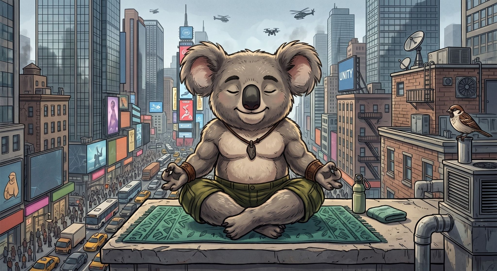

Hiçbir Yere Yetişmeyenler Kulübü
Acele edecek vaktim yok.
Burası, sakin yaşam felsefesini araştıran, deneyen ve dürüstçe sorgulayan bir kulüp. Sakin yaşam nedir, kimler böyle yaşıyor, gerçekten sürdürülebilir mi — ve ben tam olarak nerede duruyorum? Hepsi burada, sade bir dille.
Kısaca anlatÖnce en baştan
Sakin yaşam nedir?
Sakin yaşam (slow living), her şeyi yavaş yapmak değildir. Hayatı, hızın değil kendi bilinçli seçiminin belirlediği bir tempoda yaşamaktır. Yani neyi ne hızda yapacağına kendin karar verirsin: bazı şeyleri hızlandırırsın, bazılarını ise acele etmeden, doya doya yaşarsın.
Özünde tek bir soru var: Hayatı bir an önce bitirilecek bir "yapılacaklar listesi" gibi mi geçiriyoruz, yoksa gerçekten içinde miyiz? Sakin yaşam, ikincisini seçme çabası.
Bir de şunu netleştirelim
Peki ne değildir?
Sakin yaşam; her şeyi bırakıp köye yerleşmek değildir. Tembellik değildir. Teknoloji düşmanlığı değildir. Dünyadan el etek çekmek de değildir.
Aksine: işin, şehrin ve ekranların tam ortasında kalıp, o gürültünün içinde kendi ritmini kaybetmemektir.
Örnekler
Peki kimler böyle yaşıyor?
Dünyada bu felsefeyi benimsemiş epey akım var. Yavaş yemek (slow food) hareketi, endüstriyel gıdaya karşı yerel ve mevsimlik olanı savunur. Yavaş moda, hızlı tüketim yerine az ama kaliteli giyinmeyi. Dijital minimalistler ise teknolojiyi reddetmez; onu bir araç gibi kullanır, kendileri araç olmaz.
Ortak noktaları, teknolojiye bakışlarında: düşman değil, ama efendi de değil. Faydalanır, işleri bitince fişini çekerler.
İyi yanı: daha bilinçli, daha az tükenmiş bir hayat. Zayıf yanı: bu felsefe kolayca bir "lüks" ya da statü göstergesine dönüşebiliyor — pahalı organik ürünler, güzel filtreli bir "yavaşlık" pazarlaması.
Ya sürdürülebilirlik?
Bu iş gerçekten sürdürülebilir mi?
En bilinen kurumsal örnek Sakin Şehir (Cittaslow) hareketi. İtalya'da doğdu; Türkiye'de Seferihisar, Akyaka, Halfeti gibi kasabalar bu ağın parçası. Amaç, yerel mimariyi, zanaatı ve günlük ritmi küreselleşmenin tektipliğine karşı korumak.
İyi yanı: yerel kültür ve doku korunuyor, hayat insan ölçeğinde kalıyor. Ama bir çelişki var: bir yer "sakin şehir" ilan edilince turist akınına uğruyor, ev fiyatları fırlıyor, "yavaşlık" bir hafta sonu kaçamağı olarak hızla tüketiliyor. Yani ilaç, bazen hastalığa dönüşebiliyor.
Peki ben nerede duruyorum?
Ben Murat. Dürüst olayım: kendimi gönülden bir "sakin yaşamcı" olarak görmüyorum. İlgi duyuyorum, merak ediyorum — ama hâlâ büyük ölçüde hızlı yaşamın kurallarıyla yaşıyorum. Bu felsefenin bazı yerlerine yürekten katılıyorum, bazı yerlerine ise hiç katılmıyorum.
Sırf sakin diye ömrümü Halfeti gibi sosyal hayattan uzak bir yerde geçirmek ister miyim? Açıkçası hiç emin değilim. İşte tam da bu yüzden burası bir vaaz değil — katıldığım ve katılmadığım yerleriyle, tereddütlerimle birlikte tuttuğum bir seyir defteri. İsteyen okur, isteyen biraz inceledikten sonra terk eder.
Bir şeyi de baştan söyleyeyim: bu sitede her hangi bir ürün satmıyorum; politik bir amacım, gizli bir ajandam yok. buradaki araştırma ve çalışmaları maddi bir kaygıyla yapmıyorum. Kimsenin buraya üye olması da bana birşey katmayacak.
Tek bir amacım var: şu an ilgilendiğim bu konuda yaptığım incelemeleri, analizleri ve çıkarımları burada paylaşmak — ve kendi değişim grafiğimi kayıt altına almak. Malum, serde yazılımcılık var; bir yazılımcı için yaptığı her işi ölçmek bir zorunluluktur. Ben de kendi değişimimi ölçüyorum.
Dileyen bu araştırma yolculuğunda bana katılabilir; yorumları ve tecrübeleriyle sürece katkı sağlayabilir. Karar tamamen sizin.
Bu deftere ortak olmak ister misin?
Makinenin fişini çektiğimiz anlarda buluşalım. Yeni bir yazı düştüğünde haber vermem için e-posta adresini bırakabilirsin. Sık yazmıyorum — zaten acelem yok.